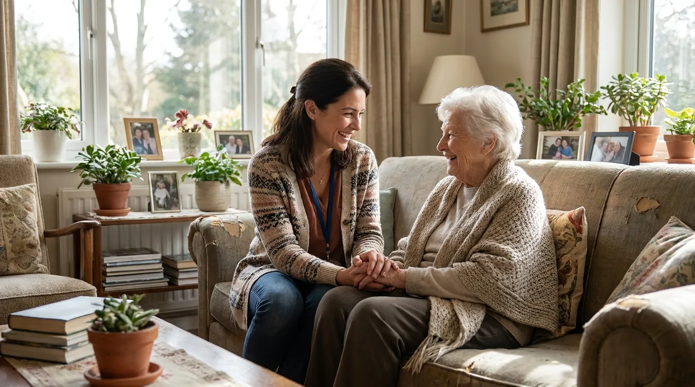
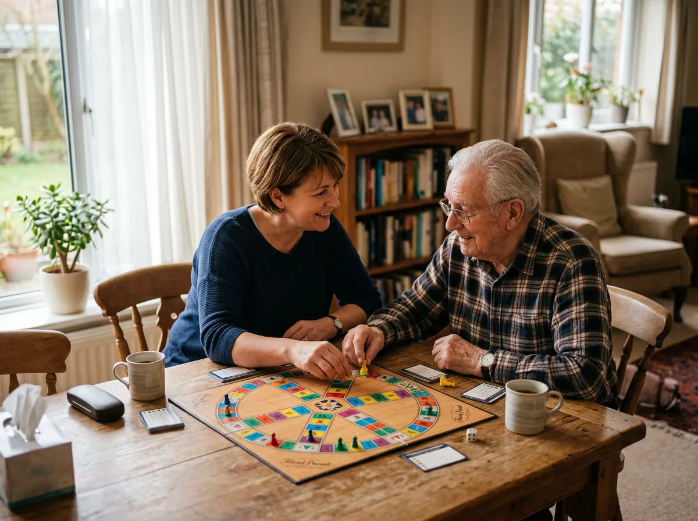
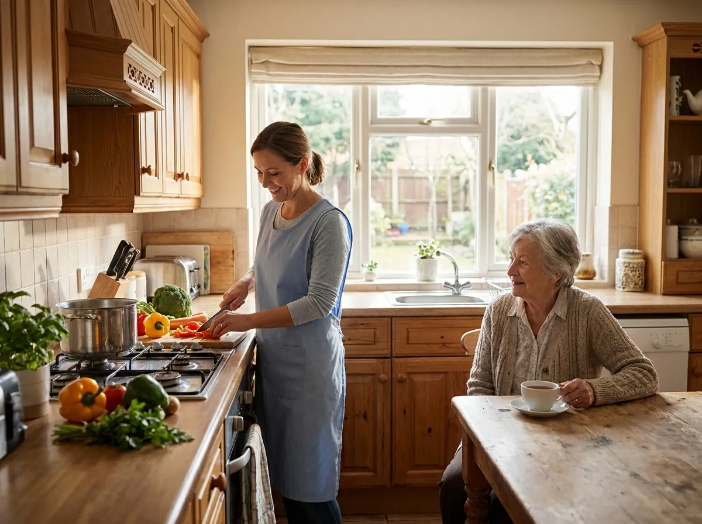

Ruf Pflege24 vermittelt seit 2003 persönlich ausgewählte Betreuungskräfte, die bei Ihrem Angehörigen zu Hause leben und im Alltag helfen. Legal, transparent und mit festem Ansprechpartner.

Ihr Angehöriger kann nicht mehr allein bleiben, aber ein Pflegeheim kommt für Sie nicht infrage. Und Sie selbst sind längst am Limit: rund um die Uhr da sein, arbeiten, eigene Familie, dazu das ständige schlechte Gewissen.
Sie müssen das nicht länger allein stemmen. Wir vermitteln Ihnen eine Betreuungskraft, die bei Ihrem Angehörigen zu Hause lebt und ihn im Alltag begleitet. Damit er in seiner vertrauten Umgebung bleibt und Sie wieder durchatmen können.
Von der 24-Stunden-Betreuung bis zur Verhinderungspflege, individuell auf Ihre Situation abgestimmt.
Eine Betreuungskraft lebt im Haushalt und unterstützt Ihren Angehörigen im Alltag.
Persönliche Begleitung und Hilfe für ältere Menschen im eigenen Zuhause.
Geduldige Begleitung mit fester Bezugsperson und Struktur im Alltag.
Einkaufen, Kochen, Reinigung, Wäsche und Ordnung im Haushalt.
Zuverlässige Ersatzbetreuung, wenn die private Pflegeperson ausfällt.
Unterstützung bei Grundpflege, Mobilität und Alltagsbegleitung.
Persönlich begleitet, von der ersten Beratung bis in den Alltag.
Sie schildern Ihre Situation, wir hören zu und beraten persönlich.
Gemeinsam legen wir fest, welche Unterstützung gebraucht wird.
Wir schlagen eine geprüfte Betreuungskraft vor, die zu Ihnen passt.
Wir organisieren Anreise und Start der Betreuung bei Ihnen zu Hause.
Wir bleiben Ansprechpartner und organisieren Wechsel und Ersatz.
Seit 2003 begleiten wir Familien in ganz Deutschland.
Keine anonymen Profile, sondern Menschen, die zu Ihrer Familie passen.
In der Regel ein festes Team aus zwei bis drei Kräften im Wechsel, für Kontinuität und Vertrauen.
Ordnungsgemäße Beschäftigung und klare Kosten, ohne versteckte Gebühren.
Ihr persönlicher Ansprechpartner ist auch während der laufenden Betreuung für Sie da.


Die Betreuung erfolgt über ein rechtssicheres Modell mit ordnungsgemäß angestellten und sozialversicherten Betreuungskräften. Keine Schwarzarbeit, keine Scheinselbstständigkeit.
Die Kosten besprechen wir vorab offen mit Ihnen. In vielen Fällen lassen sich Pflegegeld, Verhinderungspflege und die steuerliche Absetzbarkeit haushaltsnaher Dienstleistungen nutzen, um Ihre Belastung zu senken.
Was Angehörige über die Zusammenarbeit mit Ruf Pflege24 berichten.
Nach den ersten zwei Wochen war die Betreuerin, als hätte sie schon immer zu uns gehört. Meine Mutter konnte in ihrem Zuhause bleiben.
Endlich konnte ich wieder durchatmen, im Wissen, dass mein Vater rund um die Uhr gut versorgt ist.
Die Beratung war persönlich und ehrlich. Man hat gemerkt, dass hier ein Mensch zuhört und nicht nur vermittelt.
Schildern Sie uns Ihre Situation. Wir besprechen gemeinsam, welche Form der Betreuung passt, und finden die passende Lösung. Kostenlos und unverbindlich.
Georg Ruf oder ein Ansprechpartner meldet sich persönlich bei Ihnen, in der Regel innerhalb von 24 Stunden.
Am liebsten sprechen wir persönlich mit Ihnen. Rufen Sie an oder schreiben Sie uns, wir sind für Sie da.